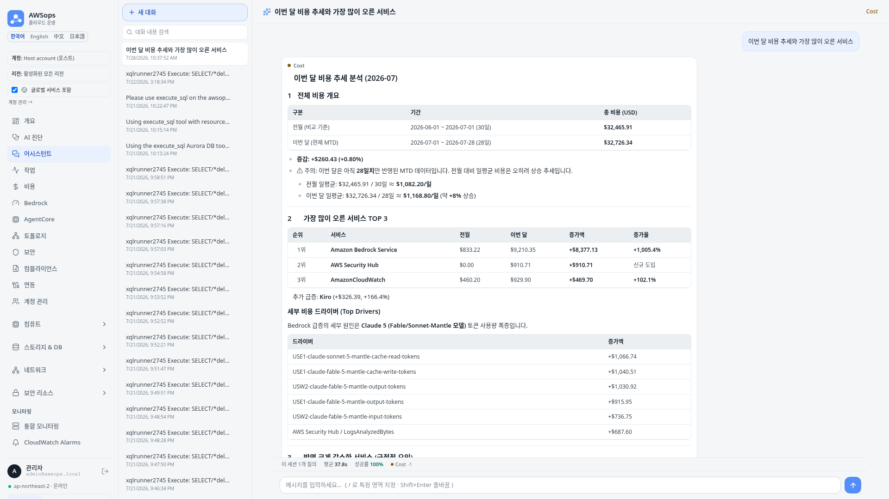
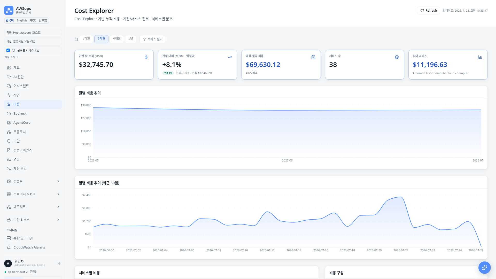
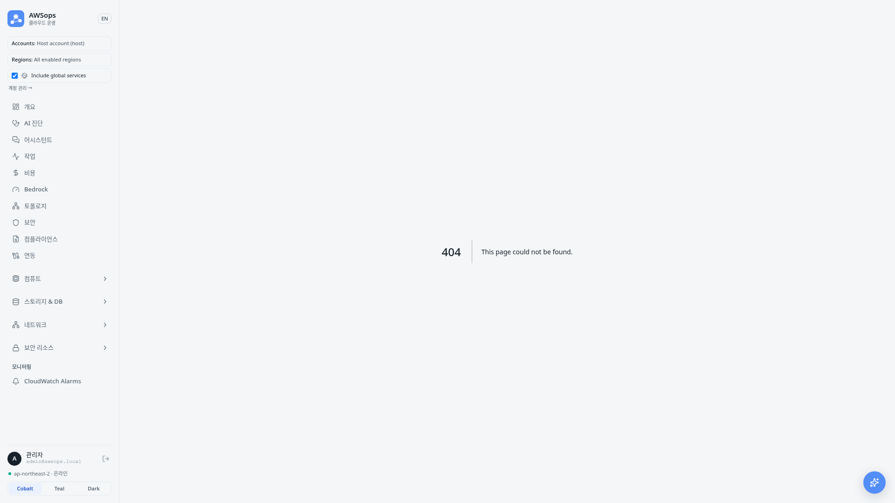
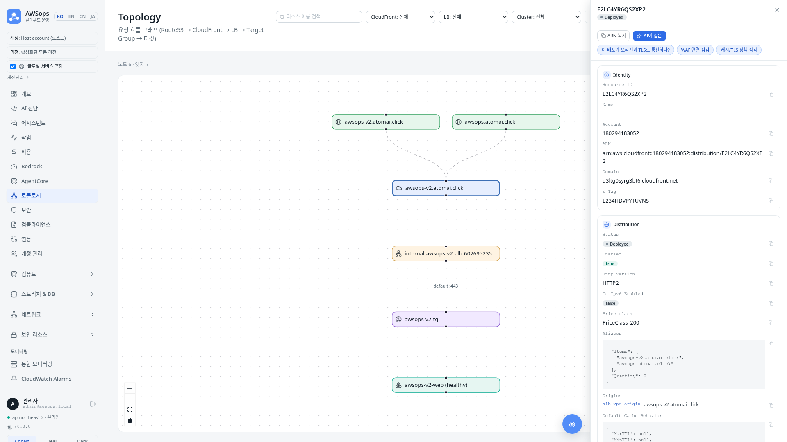
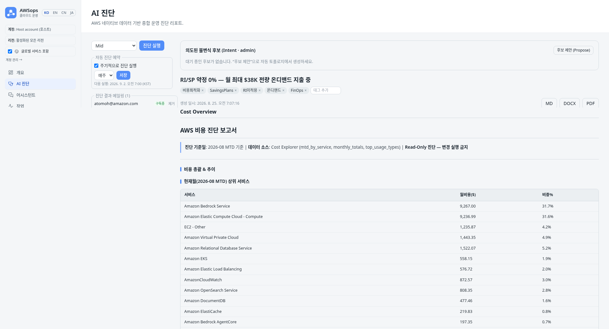
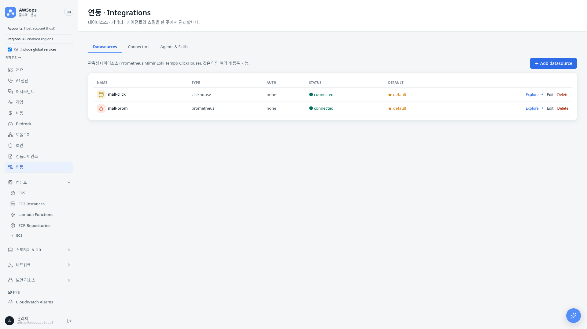
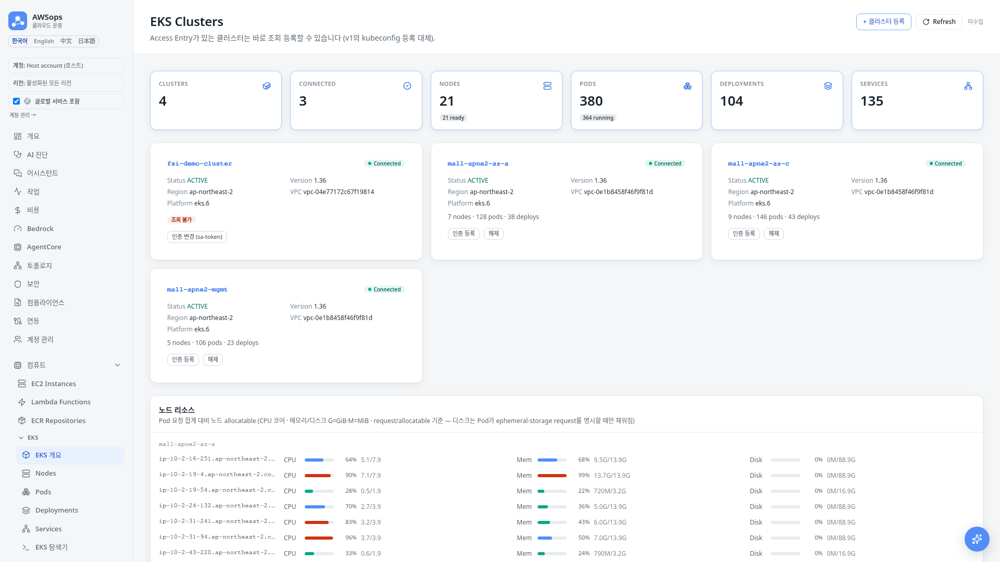
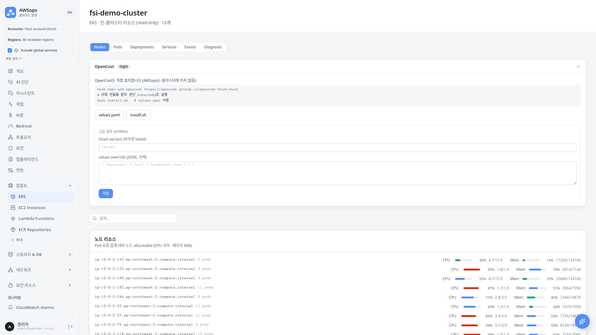
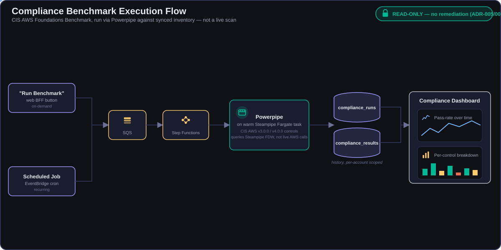

Demo & Diagnosis Report
실전 시나리오와 종합진단
AI Assistant Demo (1/2) — 라우팅 & 스트리밍
🔍 하이브리드 라우팅 (regex + Haiku)...
Gateway: cost · 프롬프트 캐싱 hit
📊 AgentCore 섹션 에이전트 · 라이브 read-only 조회...
MCP Tools ✅ Cost Explorer ✅ EKS Metrics ✅
🤖 Bedrock 분석 · SSE 스트리밍...
AI Assistant Demo (2/2) — 실제 응답 화면

답변과 함께 라우트·도구 사용 내역 표시 · 대화는 Aurora thread로 영속 저장 (resizable drawer와
/assistant전체 화면이 같은 thread 공유)
Scenario 1: Cost Analysis & Rightsizing (1/2)
사용자 질문
"비용 개선점 찾아줘"
동작 흐름 (read-only)
- cost 섹션 에이전트 — Cost Explorer / Forecast 조회
- Cost 대시보드 — 서비스별 비용·추이 시각화
- EKS 메트릭 — request 대비 실사용량 (read-only)
- regex + Haiku 라우팅 → cost gateway
분석 결과 예시 (권장만)
- "payment Pod: CPU request 500m, 실사용 50m → 90% 과할당 (rightsizing 권장)"
- "frontend Deployment: Memory limit 2Gi, 사용량 200Mi → 다운사이징 권장"
- "Node 3대 중 2대 활용률 15% 미만 → 통합 검토"
- "예상 월 절감 $1,200 — 권장사항"
Read-Only 원칙
권장사항만 제시 · 자동 적용 없음 (mutating 설치 버튼은 ADR-005로 동결 — do-not-enable)
Scenario 1: Cost Analysis & Rightsizing (2/2) — Cost 대시보드

서비스별 비용·추이 시각화 → rightsizing 후보 도출 · 권장만 제시, 자동 적용 없음
Scenario 2: Inventory & Idle Review (1/2)
사용자 흐름
/inventory/[type]페이지 → AgentCore 질의
Inventory 플랫폼
- 41종 resource types —
/inventory/[type]제네릭 페이지 - flag-gated Steampipe sync (warm Fargate) → Aurora 적재
- registry 기반 내비게이션 · fan-out sync
- 페이지별 mini-dashboard (KPI / donut / filters)
점검 예시 (read-only)
- "미연결 EBS 볼륨 · 미사용 Elastic IP 후보 식별"
- "오래된 스냅샷 · 중지된 EC2 검토"
- "ENI 참조 없는 Security Group"
- AgentCore 라이브 조회로 현황 보강
라이브 vs 인벤토리
Steampipe = 인벤토리 sync 전용 (Aurora 적재) 라이브 조회는 AgentCore MCP 도구가 담당
Scenario 2: Inventory & Idle Review (2/2) — 인벤토리 화면

페이지별 mini-dashboard에서 후보를 좁히고 → AgentCore 라이브 조회로 현황 보강
Scenario 3: Topology & Dependencies (1/2)
Flow + Infra 그래프 · /topology/resource/[id] 상세 · blast radius 진단
- 계정별 스코프 토폴로지 — 멀티 계정 그래프를 계정 단위로 필터링해 조회
- VPC Resource Map — VPC 상세 패널에서 여는 풀스크린 VPC→Subnet→RouteTable→IGW/NAT/TGW 맵
Scenario 3: Topology & Dependencies (2/2) — 그래프 화면

노드 클릭 →
/topology/resource/[id]상세 · blast radius(영향 범위) 추적 — 사람이 그래프를 보며 진단하는 read-only 방식
AI Diagnosis Report (1/2) — 16 섹션 진행
AI 종합진단 리포트 (deep · 16 sections)
AI Diagnosis Report (2/2) — 리포트 화면

자동 제목 · 태그 · 소프트 삭제 지원 — 리포트 목록과 상세 화면에서 열람
Report Export & Lifecycle
워커 기반 Export
- DOCX — python-docx
- PDF — chromium / playwright 렌더
- Noto CJK 폰트 (한글 깨짐 방지)
- 워커 티어에서 생성 · 실패 격리
저장 / 다운로드
- S3 →
diagnosis/{id}.docx·diagnosis/{id}.pdf - BFF 프록시 다운로드 라우트 + UI 메뉴
- 생성 일시 KST 표기
리포트 라이프사이클
- 자동 제목 (워커 LLM 1회, 격리)
- 태그 자동 제안 + 수동 편집
- 제목 수정 · 소프트 삭제 (
deleted_at) - 읽기 경로 =
deleted_at IS NULL - PATCH / DELETE = fail-closed (owner | admin)
XSS 안전
title / tags는 React-escape 렌더 (raw HTML 주입 없음)
Scheduled Diagnosis & Notification Digest
스케줄 진단 (diagnosis_schedule_enabled)
report_schedules테이블 — 주간 / 격주 / 월간 (next_run_at기준)- hourly
schedule_dispatcher— 스캔 후reportjob enqueue - v1
report-scheduler.ts패턴 승계
알림 다이제스트 (병합·배포 완료)
diagnosis_digest.py—notified_at IS NULL리포트를 ~15분 배치로 묶어 SNS 1건 발송 (workers_enabled && diagnosis_notify_enabled게이트로 이미 main 병합·라이브 배포됨; ADR-13이 승인한 건 스케줄 요약뿐이라 수동 실행분까지 묶는 현재 범위는 ADR 정리 대상)- 완료 즉시 개별 발송(per-report) 방식 폐기 — 폭주 방지(하루 44건 → 1건)
- PII 스크러빙 — Bedrock 호출 전 ARN·계정ID·이메일·IP·액세스키를 결정론적으로 마스킹 (현재 라이브)
Datasources — 8종 Read-Only 커넥터 (1/2)
Explore (/datasources)
- read-only 커넥터 플랫폼 (8종)
- ClickHouse · Prometheus · Loki · Tempo · Mimir
- + Jaeger · Dynatrace · Datadog (신규 3종)
- 커넥터 Lambda + Aurora schema cache
기능
- NL → query 변환 + 챗 주입(injection)
- 스키마는 Aurora에 캐시되어 빠른 재조회
- 전 커넥터 READ만 — 변경·자율 없음
Datasources (2/2) — Explore 화면

NL → query 변환 + 챗 주입 · 스키마는 Aurora 캐시 · 전 커넥터 READ만
EKS — 전체 메뉴 패밀리 (read-only) (1/2)
조회 화면
- fleet-wide nodes / pods / deployments / services 개별 페이지
- explorer — K9s 스타일, 11개 리소스 종류 탭
- container cost 뷰
인증 & 온보딩
- 3가지 클러스터 인증 모드: sa-token / assume-role / task-role(Access Entry)
- task role Access Entry + AmazonEKSAdminViewPolicy
- LIVE 즉시 조회 등록 — Access Entry 보유 클러스터는 바로 등록
EKS (2/2) — fleet 조회 & 클러스터 상세


Feature Tour: Per-Service 진단 계층
표면적으로는 콘솔이지만, 각 서비스마다 왜 문제인지 설명하는 진단 가이드가 붙어있다.
- 11개 AWS 서비스에 전용 진단 계층 — RDS · DynamoDB · ElastiCache · MSK · OpenSearch · ALB/NLB · S3/EBS · EC2 · Lambda
- 접기/펼치기 "owner 가이드" — 지표를 어떻게 읽어야 하는지 서비스별로 설명
- range-picker(구간 선택) + 정렬 가능한 메트릭 테이블
- 데이터 기반
GuideSpec— 서비스 추가는 컴포넌트가 아니라 데이터 추가
Feature Tour: 멀티 계정 Security & Compliance
ADR-011 — STS AssumeRole read-only fan-out (ExternalId: 1st-party 옵션 · 3rd-party 필수) · 계정별 보안/컴플라이언스 스코핑 · CVE Severity Distribution donut(ECR 스캔 집계).
Security Findings Pipeline

Compliance Benchmark Flow

Deployment
Conclusion & Differentiators
AWSops가 제공하는 것
- Read-only AWS 운영 대시보드 + AI 진단
- 자연어 챗 → 라이브 read-only 조회 (AgentCore MCP)
- 종합진단 리포트 (light·mid 9 / deep 16 · Well-Architected)
- 인벤토리 · 토폴로지 · Datasources · EKS
핵심 차별점
- in-account Bedrock (외부 AI SaaS API 없음)
- private edge (공개 ALB 없음, CloudFront VPC Origin)
- OOM-safe 비동기 워커 티어
Read-Only 자세 (ADR-005/007)
- AWS-리소스 변경 + 자율 = 동결 (ADR-005, do-not-enable)
- 외부 관측성 READ 허용
- 외부 기록 / 티켓 / 메시지 WRITE 는 거버넌스 하 허용
- SSRF · Secrets · DLP · human-gate · flag-OFF
- 변경되는 것은 DATA, AWS 리소스가 아님
시작하기
make configure→ Terraform applymake deploy- Cognito 사용자 추가 ·
/login - 어시스턴트에서 질문 시작
Thank You
AWSops — AI-Powered AWS Operations Dashboard
Junseok Oh | Solutions Architect | AWS